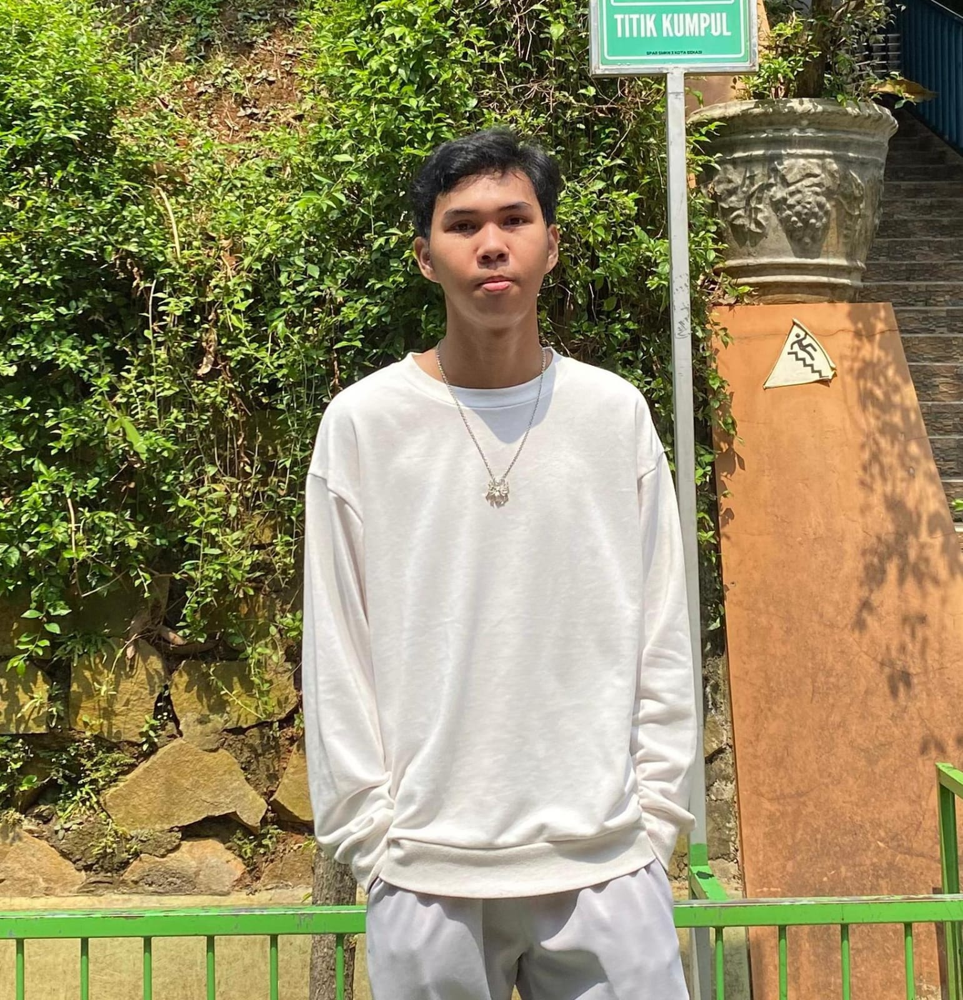

Network Engineer & Multimedia Developer passionate about building scalable infrastructure, configuring enterprise networks, and crafting modern digital experiences.

const engineer = {
name: "Frasya Pandu Asmara",
focus: ["Networking", "Linux", "Web Dev"],
experience: "PT. YCH Distripark (6 months)",
college: "Politeknik Negeri Jakarta",
status: "Open to Opportunities 🟢"
};Computer & Networking graduate with a BNSP-certified competency in Computer & Network Engineering, valid for 3 years. I bring 6 months of real-world internship experience at PT. YCH Distripark, where I managed network stability across a large-scale logistics warehouse. Skilled in Cisco/MikroTik routing, Linux server administration, and front-end web development. A consistent competition achiever at both city and national level, currently enrolled at Politeknik Negeri Jakarta and actively seeking opportunities in network engineering or IT infrastructure
CCNA-level routing, OSPF, VLANs, subnetting
Debian, SSH, Docker, service configuration
HTML/CSS/JS, responsive design, modern UI
ping diagnostics, switch & router reconfiguration, device connectivity checks, traffic monitoring
A showcase of infrastructure design and system application development.
Designed and implemented a medium-scale office network architecture using the OSPF dynamic routing protocol to support stable, efficient, and scalable connectivity.
Built a local Debian-based server environment integrated with Docker containers for virtualization, network service testing, and system automation purposes.
Developed an interactive portfolio website with a modern, responsive design optimized across all devices using the latest front-end technologies.
Official certifications and competency awards I have earned.
IT Network System Administration — Bekasi City Level
2026 View CertificateA timeline of my educational background and professional experience.
Completed elementary level education.
Active academic participation in junior high school.
Studied network topology fundamentals, subnetting, MikroTik (MTCNA), Cisco (CCNA), and Linux server administration.
Led internal community management, organized cultural events, and coordinated activities across multiple divisions.
Responsible for monitoring warehouse logistics network stability, troubleshooting operational network devices, and supporting internal IT infrastructure administration.
Enrolled as a new student to deepen the integration of interactive multimedia systems with advanced network infrastructure techniques.
Reach out to discuss networking, multimedia, collaboration, or career opportunities.
frasyapanduasmara@gmail.com
Bekasi, Indonesia